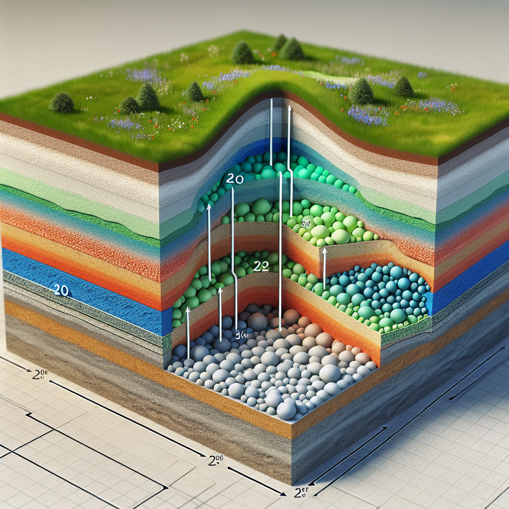

CO2 storage in soft sediments
The concept of carbon capture and storage (CCS) plays a critical role in climate change mitigation strategies. Depleted oil and gas reservoirs are particularly attractive for large-scale geologic CO2 storage due to their proven capacity to trap hydrocarbons for millions of years. However, the potential for storing CO2 in such reservoirs, especially those located offshore, is still not fully understood due to limitations in data and cores pertaining to reservoir properties. This paper focuses on the West Delta field in the Gulf of Mexico, characterized by its soft sediments, and aims to numerically simulate the effects of CO2 storage in such an environment.
2-Method:
A coupled flow-geomechanics numerical model was created using Computer Modeling Group’s (CMG) software. The geologic model was constructed based on available seismic and well logs data, and the poroelastic parameters of the reservoir rocks were measured in the laboratory. The process of reservoir depletion was simulated to consider the effects of porosity reduction and permeability change. A modified Cam-Clay model was used as the failure criterion to track porosity and subsidence changes.
3-Results:
The simulation results indicate a decrease in porosity during the depletion phase, followed by an increase during CO2 injection. However, the porosity did not fully recover post-injection. The maximum subsidence measured at the well location post-depletion was approximately 24 cm. Pressure build-up at fault zones was found to vary based on several factors including the proximity of faults to the injection well, fault dip and dip direction, and CO2 injection rate.
4-Discussion:
Our findings suggest that the potential for CO2 storage in soft sediments is influenced by various parameters including the orientation of the maximum horizontal stress (SHmax), friction coefficient, and dip of the fault. Sensitivity analysis using Fault Slip Potential (FSP) revealed that these parameters significantly impact the likelihood of fault slip. Assuming that faults are sealed, the pressure perturbation required to slip one of the major faults was found to be lower than the calculated pressure build-up after CO2 injection.
5-Conclusion:
The simulation of CO2 storage in the soft sediments of depleted reservoirs presents a possibility of reactivation in one of the major faults within the reservoir. Further research is needed to improve our understanding of the geomechanical behavior of reservoirs under CO2 storage and to develop strategies for safe and efficient CO2 sequestration.